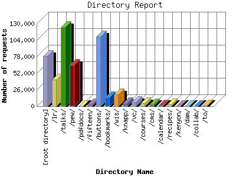

Analog 5.32
Analog 5.32 Report Magic 2.16
Report Magic 2.16The Directory Report analyzes accesses to this web site's directories. This information can be useful in determining the most requested areas.
This report shows results with at least 0.010000 percent of the total bytes. This report is sorted by amount of bytes transferred.

| Directory Name | Number of requests | Percentage of the bytes | |
|---|---|---|---|
| 1. | [root directory] | 78,858 | 23.45% |
| 2. | /lr/ | 41,701 | 23.18% |
| 3. | /talks/ | 124,342 | 16.66% |
| 4. | /pew/ | 65,424 | 9.64% |
| 5. | /pdfdocs/ | 355 | 8.89% |
| 6. | /fifteen/ | 2,771 | 4.39% |
| 7. | /buttons/ | 109,276 | 3.77% |
| 8. | /bookmarks/ | 13,554 | 3.41% |
| 9. | /wis/ | 18,792 | 2.58% |
| 10. | /knapp/ | 4,713 | 1.73% |
| 11. | /vc/ | 6,423 | 0.97% |
| 12. | /courses/ | 4,294 | 0.58% |
| 13. | /cms/ | 2,402 | 0.47% |
| 14. | /calendar/ | 1,101 | 0.11% |
| 15. | /recipes/ | 3,154 | 0.09% |
| 16. | /kenyon/ | 420 | 0.04% |
| 17. | /dam/ | 464 | 0.03% |
| 18. | /collab/ | 170 | 0.01% |
| 19. | /to/ | 528 | 0.01% |
| [not listed: 6] | 65 | 0.02% | |
This report was generated on March 2, 2005 10:49.
Report time frame March 9, 2003 20:57 to February 15, 2005 03:11.
| Web statistics report produced by: | |
| Analog 5.32 | Report Magic 2.16 |